Abstract
This project is an interactive system that realistically models the different aspects of driving a car, such as acceleration/deceleration, momentum, air resistance, rolling resistance, gear shifting in automatic and manual transmission, and steering the wheel. This system allows you to freely drive around a Ferrari 458. In addition, before driving around in a Ferrari 458, many parts, such as the body, trim, leather seats, and carpet, can be custom colored to one's liking.
Technical Approach
Forces
There are 4 primary forces that act on a car as it accelerates. They are as follows:
1) Traction Force is the force used to generate motion between the tire and the ground through the use of friction. The way a car does this is through torque generated by the engine. When this drive torque is applied to the wheels, it causes them to rotate. However, friction between the tires and ground resist this rotation creating the traction force in the opposite direction to the rotation of the tires as shown in the picture below. This traction force then pushes the car forward.
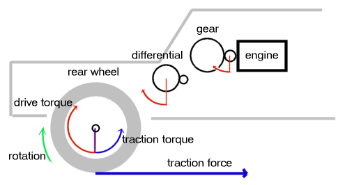
Traction force is calculated in a series of steps:
(1) First, the engine RPM is calculated by translating the rotation of the wheel to rotation of the engine. It is done with the formula
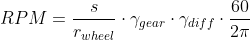
where
- - 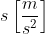 is the speed of the car
- - 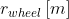 is the radius of the wheel
- - 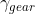 is the current gear ratio
- - 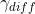 is the differential ratio
For a Ferrari 458 specifically, these values are as follows:
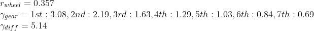
(2) Second, given the RPM, the drive torque can be calculated with the torque curve. The torque curve is an engine-specific curve that is generated from factory data. It identifies the torque or horsepower from a given RPM through linear interpolation of the curve for the current RPM as described in the following equation.
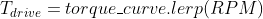
The torque curve for a standard Ferrari 458 engine is shown below. The x-asis is RPM while the orange y-axis is torque and the white y-axis is horsepower. Notice that the highest torque isn't given at max RPM, but rather there's an optimal point which is used for optimal gear shifting.
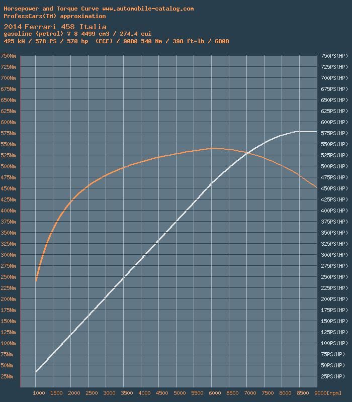
(3) Third, given the drive torque, it is then converted to a force with the following formula:
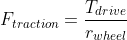
2) Cornering Force is the force that develops laterally to the tires when cornering at a high speeds. Cornering force is calculated in a series of steps.
(1) The cornering force on the wheels can be approximated as a function of the slip angle. This is the angle between the direction of the tires and the car's direction of travel.
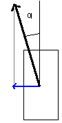
There are three factors that contribute to the slip angle of the wheels: the sideslip angle of the car, the angular rotation of the car, and the steering angle (only for the front wheels). The slip angles for the front and rear wheels can be calculated with the following formulas.
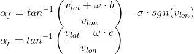
where
- - 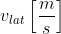 is the velocity in the lateral direction
- - 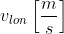 is the velocity in the longitudinal direction
- - 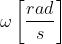 is the angular velocity
- - is the steering angle
(2) The cornering force depends on the axle: front or rear. Due to the weight transfer in the axles as the car accelerates/decelerates and makes turn, the weight of the front and rear axles are calculated slightly different. This weight distribution changes as the car accelerates or decelerates because more weight is put on the back wheels during acceleration and more weight is put on the front wheels during deceleration. As there's more weight on the rear drive wheel (the wheel that the engine spins), the more traction the wheel will get, and thus the car will be able to accelerate even faster.
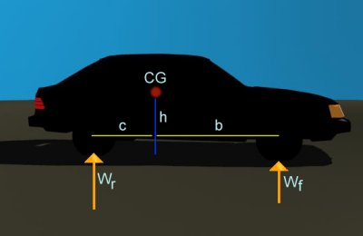
The weight on each axle are calculated with the following formulas.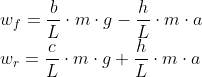
where
- - 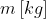 is the mass of the car
- - 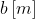 is the distance between the front axle and CG
- - 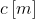 is the distance between the rear axle and CG
- - 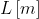 is the length of the wheelbase
- - 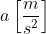 is the acceleration of the car
- - 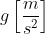 is the acceleration due to gravity
(3) For each of the axles, the cornering force can be calculated as a function of the slip angle. Note that alpha and weight have the front and rear components to it.
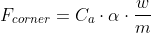
where
- - 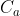 is the coefficient of cornering stiffness
- -
 is the slip angle of each axle
is the slip angle of each axle - - 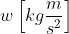 is the weight on each axle
- - is the mass of the car
3) Drag Force is the force cause by friction on the frontal area of the car as it accelerates. As the velocity of the car increases, there is more drag resistance due to the increasing amount of wind that hits the front area of the car. This is calculated with the equation
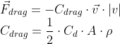
where
- - 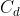 is the coefficient of friction on the car
- - 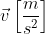 is the velocity of the car
- - 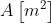 is the frontal area of the car
- - 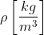is the density of air
The coefficient of friction on the car depends on the shape of the car and is determined via wind tunnel tests. This value is car specific and can be easily looked up.
Note that drag force has two components: the lateral and longitudinal force. This is because the force in the lateral direction depends only on the velocity in the lateral direction while the force in the longitudenal direction depends only on the velocity in the longitudenal direction.
For a Ferrari 458 specifically, these constants are as follows:
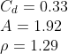
4) Rolling Resistance Force is the friction force caused by objects rolling. For example, the friction between the tires and road or the friction in the axles. At low speeds the rolling resistance is the main resistance force, but at high speeds the drag is the main resistance force. And at approximately 30 m/s, they are equal, so that means C_rr is approximated to be 30 times the value of C_drag. This is calculated with the equation.
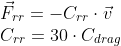
Note that rolling resistance force has two components: the lateral and longitudinal force. This is because the force in the lateral direction depends only on the velocity in the lateral direction while the force in the longitudenal direction depends only on the velocity in the longitudenal direction.
Acceleration
Each of the 4 forces described above contribute to the acceleration of the car. The forces that act on the car in the longitudinal direction are the traction force, the longitudinal cornering force of the front axle, and the longitudinal force of the rolling resistance and drag resistance. The forces that act on the car in the alteral direction are the rear cornering force, the lateral cornering force of the front axle, and the lateral forces fo the rolling resistance and drag resistance. The longitudinal cornering force of the rear axle does not affect the longitudinal force because the rear wheels do not turn, so there only exists a lateral force.
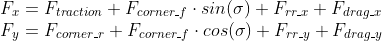
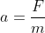
Automatic Transmission
The car has an option to go from automatic transmission to manual transmission. In manual transmission, the user has the choice of when to upshift and downshift. Whereas, in automatic transmission the car will automatically shift gears based on the speed of the car. This decision to upshift or downshift is made simply as follows:
When to upshift: First calculate the max velocity at the current gear ratio given where the optimal shift RPM is. If the current velocity is larger than the max velocity, then the gear shifts up.
When to downshift: First calculate the max velocity at the gear ratio one lower than the current. This will be calculated at the optimal shift RPM. If the current velocity is less than the max velocity of the lower gear, then downshifting occurs.
The equation for calculating max velocity is as follows:
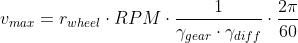
Problems encountered
One of the biggest problems I encountered with all the papers I read was translating between variables and terminology used. Different papers had different terminology for the same thing and this kept confusing me. Sometimes the paper even changed the terminology of something in the middle of explaning it, so it was difficult to follow. For example, the paper started introducing cornering force, but then changed the name mid-explanation to lateral force. This confused me because I understood lateral force as the force in the lateral direction, and there was no force in the longitudinal direction. But then the paper said there was a longitudinal component to the 'lateral force'. I was very confused because these directions are perpendicular to each other. After a while, I realized they meant that the cornering force has a longitudinal and lateral directions in reference to the car frame. They just referred to the cornering force as a lateral force because cornering force is defined as the lateral force in reference to the tires, not to the car. It was all because I didn't realize they changed the reference from the car to the tires midway.
Another problem I encountered was finding a mesh that I could use. I spend around 2-3 days trying to find a car model that I was able to manipulate. Initially I found a nice model of an Audi R8, on the open-source website clara.io, but then I couldnt figure out how to import it with three.js because it wasn't in the correct format. Clara.io even had a tutorial on how to import it to three.js, but that errored because it had been depreciated. Then I found another website that offered .gltf files. But then found out that each mesh cost around $150, which was definitely a no-go. Then I found the example model that three.js already had running. It was very simple and I wish I had found that sooner so I didn't waste so much time loading a car model, but I'm glad I found it in the end.
Another smaller problem I encountered was actually finding all this data on a specific car model. I was lucky that the car was a Ferrari 458, so it's a fairly popular sports car. It might have been harder to find these engine/car specs if the car was a smaller or even older model.
Lessons learned
A lesson I learned was that I should first check the capabilities of the system I'm using before deciding to use that system. An easy was to do this is by looking at existing projects that other people have or some example code that they create. This also allows you to start off not from scratch, so it's easier to implement what you actually want to implement rather than just being stuck on a trivial task like importing a model.
Results
Driving Experience
This video demonstrated the interactiveness of the system by allowing freedom in driving a Ferrari 458 around a map. It demonstrates acceleration/deceleration, momentum, and turning implemented with all forces acting on the car. As the car accelerates, the chassis of the car is tilted slightly back due to momentum. This puts more weight on the drive wheels allowing to gain more traction and accelerate even faster. And as the steering wheel turns, the car tires rotate proportionally in order to turn the car. The chassis also rotates laterally along with each turn. And as the car decelerates, the chassis of the car is tilted slightly forward due to momentum. The car reaches a max speed of 212mph which is as expected according to the factory specs.
Switching from manual to automatic transmission is also an option. By toggling that switch, it will either respond to upshifts or downshifts button presses or it will automatically shift at the optimal RPM defined for the car.
Forces Acting on the Car
This video shows how each force acts on the car by toggling the on/off switches to the top right to turn forces on or off. It is a little hard to see, but pay attention to the acceleration at the top left under the engine details. Notice how when only traction force is on, the car will respond to pressing the gas, but when it is released, there is no resistance force from rolling resistance or air resistance so there is no deceleration. However, when only air resistance force or rolling resistance is on, there is a noticeable deceleration when the gas is released.
Designability
This video demonstrated the customizability feature that was implemented. The body, rim, trim, carpet, leather seats, and glass tint are all changeable to any RGB color.
Demo
Demo available here!
Note: controls are via an xbox controller not arrowkeys. Arrowkey controllers will be implemented after the deadline because I'm running short on time.
Project Video
References
- - Car Physics for Games
- - Starting three.js example
- - Mesh model by vicent091036
- - Modeling Traction force
- - Ferrari 458 specs & torque curve
- - Inspirational Project #1: VR driving simulation
- - Inspirational Project #2: Car Design
- - Inspirational Project #3: Interior View
Contributors and Contributions
I was the only group member, so I am the sole contributor.